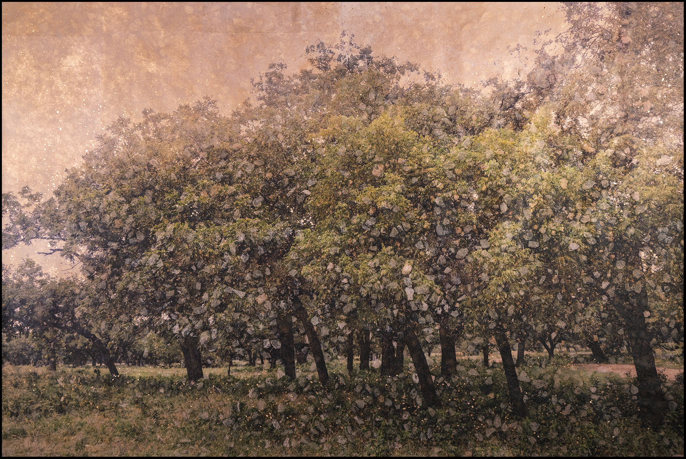

Lesley Nowlin Blessing
Lesley Nowlin Blessing’s career covers decades of experience and expression. Growing up in and around the Texas hill country, Lesley’s introduction to photography came first through her father’s love of the lens. She capitalized on this passion after high school graduation, receiving a BFA from the Hartford Art School at The University of Hartford. Eventually, she returned to Texas and her love for the people and the natural landscapes of Texas continue to inform and inspire her work. Her new series, Altered State, features landscapes exclusively from Far View Ranch, a sprawling property outside of Llano, Texas that is central to Lesley’s family life and a passion project of her late father. By capturing the landscape with her camera, then utilizing the image as a base canvas on which she creates a dynamic and kinesthetic experience of the work, Lesley captures a sense of movement and life within the natural world, while also suggesting dimensions to this world that are not visible to the naked eye. She achieves this by starting with a photographic print or Giclee, and then adding layers of texture and detail that include ink, pencil, metal leaf, acrylic gouache, and acrylic. The result is a magical interplay between image and imagination, infused by the artist’s deep connection to the land and commitment to a highly detailed and labor-intensive process of illuminating the spaces behind, on top of, and in between the initial image. In Altered State, we see the intricacy of a process that results in a sense of wonder and substance in what others might see as negative space, capturing a shimmering sense of beauty, hope, and consciousness beyond what eyes might see.